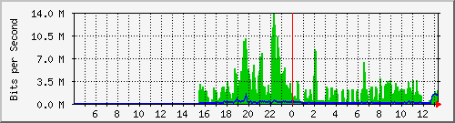
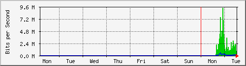
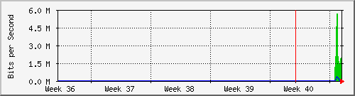

Traffic Analysis for Gi0/1.1234 -- data3825_1.sky
| System: | data3825_1.sky in stoyka |
| Maintainer: | falcon@skyinet.org |
| Description: | GigabitEthernet0/1.1234 |
| ifType: | Layer 2 Virtual LAN using 802.1Q (135) |
| ifName: | Gi0/1.1234 |
| Max Speed: | 1000.0 Mbits/s |
| Ip: | 10.255.1.6 (No DNS name) |
The statistics were last updated Tuesday, 6 October 2015 at 13:20,
at which time 'data3825_1.sky' had been up for 12 days, 11:42:52.
`Daily' Graph (5 Minute Average)

|
Max |
Average |
Current |
| In |
13.8 Mb/s (1.4%) |
2274.5 kb/s (0.2%) |
2008.4 kb/s (0.2%) |
| Out |
1522.4 kb/s (0.2%) |
171.0 kb/s (0.0%) |
1263.0 kb/s (0.1%) |
`Weekly' Graph (30 Minute Average)

|
Max |
Average |
Current |
| In |
9319.5 kb/s (0.9%) |
2275.5 kb/s (0.2%) |
140.3 kb/s (0.0%) |
| Out |
560.9 kb/s (0.1%) |
133.4 kb/s (0.0%) |
37.5 kb/s (0.0%) |
`Monthly' Graph (2 Hour Average)

|
Max |
Average |
Current |
| In |
5675.7 kb/s (0.6%) |
2365.8 kb/s (0.2%) |
1932.9 kb/s (0.2%) |
| Out |
302.5 kb/s (0.0%) |
137.8 kb/s (0.0%) |
117.1 kb/s (0.0%) |
`Yearly' Graph (1 Day Average)

|
Max |
Average |
Current |
| In |
0.0 b/s (0.0%) |
0.0 b/s (0.0%) |
0.0 b/s (0.0%) |
| Out |
0.0 b/s (0.0%) |
0.0 b/s (0.0%) |
0.0 b/s (0.0%) |
| GREEN ### |
Incoming Traffic in Bits per Second |
| BLUE ### |
Outgoing Traffic in Bits per Second |